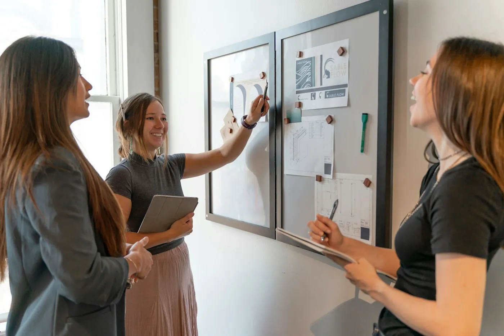

01
Línea principal
Torre 7 Proyecta
Fortalecimiento organizacional y gestión de proyectos. La línea central de nuestra propuesta de valor: seis servicios y tres membresías.
Ver servicios →

Hablemos→Soluciones integrales · Colombia
Proyectos, fortalecimiento, formación, investigación aplicada e innovación para organizaciones sociales y ESAL.
Quiénes somos
Cada organización tiene una realidad particular, capacidades por potenciar y desafíos que requieren soluciones pertinentes. Por eso partimos de comprender sus necesidades y construimos alternativas acordes con sus objetivos, recursos y contexto.
Cuatro líneas estratégicas
Línea principal
Fortalecimiento organizacional y gestión de proyectos. La línea central de nuestra propuesta de valor: seis servicios y tres membresías.
Ver servicios →Complementaria
Formación y desarrollo de capacidades: cursos y talleres, formación en proyectos, planeación e indicadores, programas a la medida y materiales de aprendizaje. Presencial, virtual o combinada.
Solicitar información →
Complementaria
Innovación y transformación organizacional: diagnóstico de oportunidades, diseño de soluciones, talleres de ideación y cocreación, e iniciativas piloto.
Solicitar información →
Complementaria
Investigación aplicada y generación de conocimiento: diagnósticos, estudios e instrumentos, análisis cualitativo y cuantitativo, y sistematización de experiencias.
Solicitar información →
Torre 7 Proyecta · Portafolio
Capacidades, necesidades y oportunidades de mejora.
Objetivos, prioridades, estrategias e indicadores.
De la idea a un proyecto con objetivos, actividades, recursos, resultados e indicadores.
Oportunidades de financiación y cooperación pertinentes. No implica garantizar financiación ni aprobación.
Herramientas para monitorear actividades, resultados y avances.
Mejores condiciones de continuidad para tus procesos.
Cómo trabajamos
Escuchamos a la organización, identificamos su necesidad y delimitamos el alcance del trabajo.
Definimos objetivos, metodología, actividades, entregables y criterios de seguimiento.
Ejecutamos las actividades acordadas y construimos las soluciones con el cliente.
Revisamos los resultados, documentamos aprendizajes y proponemos acciones de continuidad.
Membresías Torre 7 Proyecta
El alcance de cada nivel se define con tu organización.
Nivel I
Para organizaciones que comienzan a fortalecer su gestión.
Nivel II
Para organizaciones que necesitan acompañamiento periódico.
Nivel III
Para organizaciones que requieren un acompañamiento más integral.


Visión 2035
Reconocidos en Colombia, con proyección internacional, por generar soluciones pertinentes, alianzas estratégicas e impactos sostenibles.


Con organizaciones sociales y entidades sin ánimo de lucro (ESAL) de manera especial, y también con empresas, entidades sociales e instituciones.
Sí. Estas líneas amplían la oferta de Torre 7 Proyecta y también pueden contratarse de manera independiente cuando la necesidad lo justifique.
No. Identificamos y analizamos oportunidades pertinentes, criterios de elegibilidad y la hoja de ruta para postular, pero no garantizamos financiación ni aprobación.
Los entregables definitivos dependen del diagnóstico y del alcance acordado con cada organización.
Presencial, virtual o combinada.
Red de ESAL
Un espacio para visibilizar e impulsar a las entidades sin ánimo de lucro y organizaciones sociales que hacen parte de nuestra red.
No encontramos organizaciones con ese criterio.
Blog
Artículos prácticos sobre proyectos, gestión, formación e innovación para organizaciones sociales y ESAL.
Hablemos
Cuéntanos qué necesita tu organización y construiremos una propuesta ajustada a tus objetivos, recursos y contexto.
torre7.colombia@gmail.com